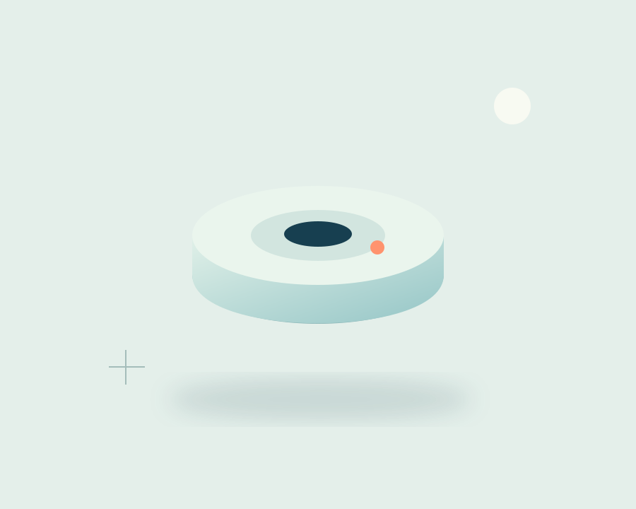
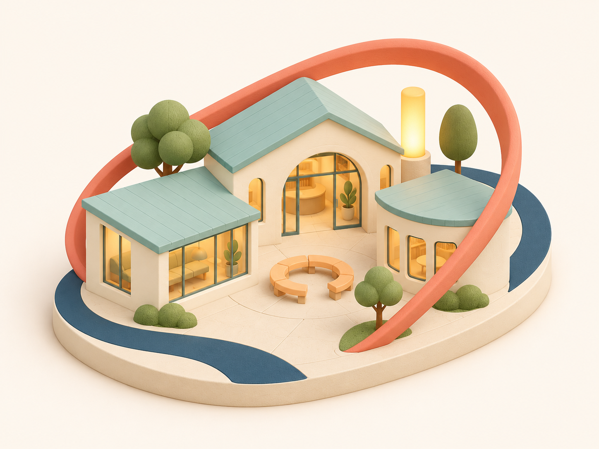

작은 준비를꾸준하게.직접 생성한 가상 공간 콘셉트
새로운 공간의 시작부터, 필요한 준비를 함께 생각합니다.
자세히 살펴보기 ↗온길이 생각하는 준비
설비 너머의 일상을,
사람의 눈높이에서 봅니다.
누군가에게는 일터이고, 누군가에게는 배움과 쉼의 장소.
공간마다 다른 하루를 이해하는 데서 좋은 준비가 시작된다고 생각합니다. 살펴보고, 기록하고, 다음 사람에게 잇는 과정을 함께 그립니다.
사업 안내
안전을 대하는
세 가지 방법.
처음의 설계부터 일상 속 관리와 소통까지.
공간의 쓰임에 맞는 질문을 함께 정리합니다.
제품 탐색
각자의 자리에서,
하나의 준비로.
공간 이야기
공간마다 다른 하루,
그에 맞는 생각.
온길 소식